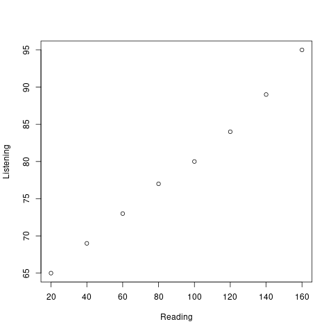
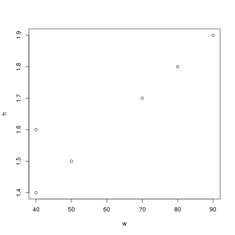
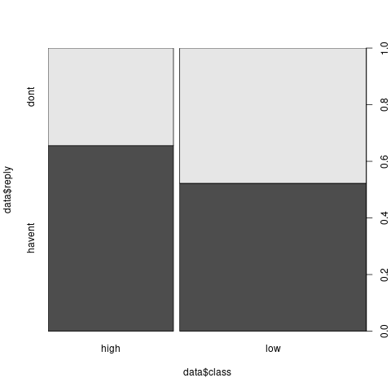
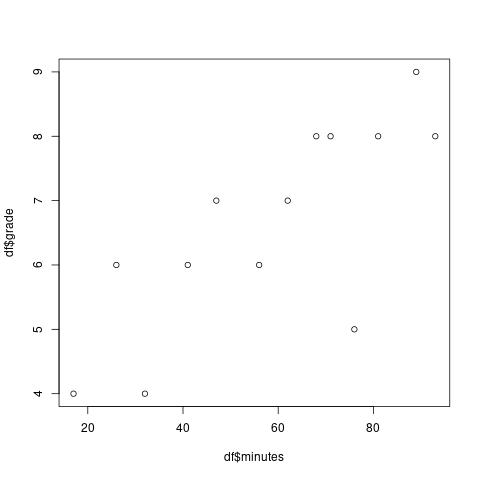
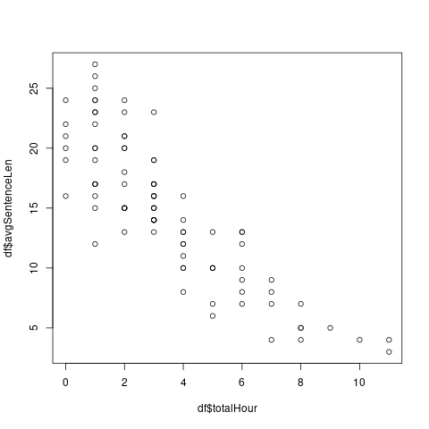

Basic statistics
1 Practical 1
Firs we begin be importing our dataset. We have to use an additional library to read an *.xlsx file. After that we assign names to the columns. And we take a look at the first rows of the dataset to see what it looks like.
data <- read.csv("./data/p1.csv")
names(data) <- c("id","age","sex","profs")
head(data)
| 1 | 16 | 1 | 91 |
| 2 | 20 | 2 | 58 |
| 3 | 24 | 1 | 52 |
| 4 | 22 | 2 | 45 |
| 5 | 18 | 1 | 78 |
| 6 | 14 | 2 | 88 |
1.1 Question 1
Does the proficiency score increase or decrease with age?
To answer this question we might simply plot both age and proficiency score and see if there is any clear indication.
plot(data$age,data$profs)

Well, yes, from the scatter plot we built we can see that as the age increases the proficiency decreases.
1.2 Question 2
Is there a difference in proficiency score between female and male participants?
aggregate(data$profs, by=list(Category=data$sex), FUN=mean)
| 1 | 75.5333333333333 |
| 2 | 63.6666666666667 |
1.3 Question 3
Is there an overall difference in age between male and female participants?
m <- data$age[data$sex == 1] f <- data$age[data$sex == 2] boxplot(m,f)
aggregate(data$age, by=list(Category=data$sex), FUN=mean)
| 1 | 20.1333333333333 |
| 2 | 20.5333333333333 |
2 Practical 2
data <- read.csv("./data/p1.csv")
names(data) <- c("id","age","sex","profs")
str(data)
2.1 Which age occurs most often?
which.max(tabulate(data$age))
16
2.2 Find out what’s the mean, the median, the mode, the range and the standard deviation of the Proficiency Score in your data.
mean(data$profs)
69.6
median(data$profs)
69
which.max(tabulate(data$profs))
59
range(data$profs)
| 33 |
| 97 |
sd(data$profs)
16.4434244273069
2.3 Find out what is the minimum age, the maximum age, the mean age and the standard deviation.
min(data$age)
14
max(data$age)
27
mean(data$age)
20.3333333333333
sd(data$age)
3.56547944576335
sd(data$age)
3.56547944576335
2.4 What is the most frequently occurring proficiency score
which.max(tabulate(data$profs))
59
2.5 What is the z-score of Participant 13?
scale(data$profs,center=TRUE, scale=TRUE)[13]
-0.462190830966998
2.6 Which group has higher proficiency scores, the male or the female participants?
aggregate(data$profs, by=list(Category=data$sex), FUN=mean)
| 1 | 75.5333333333333 |
| 2 | 63.6666666666667 |
2.7 Which group scored more homogeneously?
aggregate(data$profs, by=list(Category=data$sex), FUN=sd)
| 1 | 14.2421239721502 |
| 2 | 16.7871833197092 |
2.8 Boxplots
m <- data$profs[data$sex == 1]
f <- data$profs[data$sex == 2]
boxplot(m,f,names=c("M","F"))

2.9 Part B
Provide the mean, the mode, the median, the range and the standard deviation.
a <- c(3, 4, 5, 6, 7, 8, 9) b <- c(6, 6, 6, 6, 6, 6, 6) c <- c(4, 4, 4, 6, 7, 7, 10) d <- c(1, 1, 1, 4, 9, 12, 14)
| 1 |
| 1 |
| 1 |
| 4 |
| 9 |
| 12 |
| 14 |
MySummary <- function(dataset) {
m = mean(dataset)
mode = which.max(tabulate(dataset))
med = median(dataset)
stdde = sd(dataset)
results <- c(m,mode,med,stdde)
return(results)
}
MySummary(a)
| 6 |
| 3 |
| 6 |
| 2.16024689946929 |
MySummary(b)
| 6 |
| 6 |
| 6 |
| 0 |
MySummary(c)
| 6 |
| 4 |
| 6 |
| 2.23606797749979 |
MySummary(d)
| 6 |
| 1 |
| 4 |
| 5.59761854124889 |
3 Practical 3
3.1 Part A
As always, we begin by importing the data and taking a quick look at the first rows to see what it looks like.
data <- read.csv("./data/p3a.csv",na="",header=TRUE)
head(data)
| 1 | A | 1A | 10 | 5 | 5 | 7 | 4 | 2 | 4 | 14 | 5 | 5 | 5 | 0 | 5 | 0 | 0 | 4 | 12 |
| 2 | A | 1A | 12 | 5 | 4 | 8 | 4 | 4 | 5 | 18 | 5 | 0 | 5 | 0 | 0 | 5 | 0 | 4 | 17 |
| 3 | A | 1A | 10 | 4 | 5 | 6 | 2 | 3 | 0 | 8 | 0 | 5 | 5 | 0 | 5 | 0 | 0 | 4 | 11 |
| 4 | A | 1A | 18 | 5 | 6 | 8 | 5 | 3 | 4 | 15 | 5 | 5 | 5 | 0 | 5 | 0 | 5 | 4 | 12 |
| 5 | A | 1B | 20 | 5 | 6 | 7 | 5 | 4 | 4 | 19 | 5 | 5 | 5 | 0 | 5 | 0 | 0 | 5 | 13 |
| 6 | A | 1A | 16 | 5 | 6 | 8 | 6 | 3 | 1 | 19 | 0 | 0 | 5 | 0 | 5 | 0 | 0 | 4 | 11 |
Now we define the type of variables for teacher and group. More precisely, we want to define them as factors.
data$group <- as.factor(data$group) data$teacher <- as.factor(data$teacher) str(data)
'data.frame': 130 obs. of 20 variables: $ Student.: int 1 2 3 4 5 6 7 8 9 10 ... $ teacher : Factor w/ 2 levels "A","B": 1 1 1 1 1 1 1 1 1 1 ... $ group : Factor w/ 5 levels "1A","1B","1C",..: 1 1 1 1 2 1 1 1 1 1 ... $ Q1 : int 10 12 10 18 20 16 10 7 20 11 ... $ Q2 : int 5 5 4 5 5 5 3 4 4 5 ... $ Q3 : int 5 4 5 6 6 6 4 6 6 5 ... $ Q4 : int 7 8 6 8 7 8 8 6 6 7 ... $ Q5 : int 4 4 2 5 5 6 5 3 6 6 ... $ Q6 : int 2 4 3 3 4 3 3 2 3 3 ... $ Q7 : int 4 5 0 4 4 1 3 0 4 2 ... $ Q8 : int 14 18 8 15 19 19 16 14 17 17 ... $ Q9 : int 5 5 0 5 5 0 0 0 5 5 ... $ Q10 : int 5 0 5 5 5 0 5 0 5 5 ... $ Q11 : int 5 5 5 5 5 5 5 5 5 5 ... $ Q12 : int 0 0 0 0 0 0 5 0 0 0 ... $ Q13 : int 5 0 5 5 5 5 5 0 5 0 ... $ Q14 : int 0 5 0 0 0 0 0 0 0 0 ... $ Q15 : int 0 0 0 5 0 0 0 0 5 0 ... $ Q16 : num 4 4 4 4 5 4 2 5 4 4 ... $ Q17 : int 12 17 11 12 13 11 11 2 8 12 ...
3.1.1 Descriptives and graphs for groups
Adding a TOTAL_score variable.
data$TOTAL_score <- rowSums(data[,4:20]) str(data$TOTAL_score)
num [1:130] 87 96 68 105 108 89 85 54 103 87 ...
3.1.2 Which performed best? And which group performed most homogeneously?
best <- aggregate(data$TOTAL_score, by=list(data$group), FUN=mean) best$Group.1[which.max(best$x)]
1B
more_homo <- aggregate(data$TOTAL_score, by=list(data$group), FUN=sd) more_homo$Group.1[which.min(more_homo$x)]
1C
3.1.3 Which teacher performed best?
byteacher <- aggregate(data$TOTAL_score, by=list(data$teacher), FUN=mean)
| A | 78.4 |
| B | 69.2928571428571 |
Teacher A
3.1.4 Boxplot
teacherA <- data$TOTAL_score[data$teacher == "A"] teacherB <- data$TOTAL_score[data$teacher == "B"] boxplot(teacherA,teacherB)

3.1.5 Grades
data$grade <- trunc(((data$TOTAL_score/143)*100)/10) str(data$grade)
num [1:130] 6 6 4 7 7 6 5 3 7 6 ...
3.1.6 How many students passed?
table(data$grade >= 6)
| FALSE | 86 |
| TRUE | 44 |
3.1.7 Checking for normality
x <- data$grade h<-hist(x, breaks=10, col="red", xlab="Grade", main="Histogram with normal curve of grades") xfit<-seq(min(x),max(x),length=40) yfit<-dnorm(xfit,mean=mean(x),sd=sd(x)) yfit <- yfit*diff(h$mids[1:2])*length(x) lines(xfit, yfit, col="blue", lwd=2)

3.1.8 Zscores
zgrades <- scale(data$grade,center=TRUE, scale=TRUE) round(zgrades[c(11,33,44,55)],2)
| 0.8 |
| -1.58 |
| 1.99 |
| 0.8 |
3.1.9 Impressions about teacher gorup
It seems to me that teacher A is a better one.
3.1.10 The Null hypothesis
There is no difference between the two groups.
3.1.11 Defining the variables
teacher is the independent variable.
3.1.12 Running the test
The default R's function assumes that there is non equal variance between the two groups. So we first check if that's the case, and in case the variance is equal, then we pass an additional argument to the function.
var(teacherA)
481.871186440678
var(teacherB)
554.467339544513
Well, at this point I don't know if this difference can be considered large enough to justify the use of the Welsh test. I'll run both.
t.test(teacherA,teacherB, var.equal=TRUE)$p.value
0.0250141709914793
t.test(teacherA,teacherB)$p.value
0.02426194067448
It is safe to reject the null hypothesis.
3.2 Part B
data <- read.csv("./data/p3b.csv",na="")
colnames(data) <- c("partecipant","motivation","score")
str(data)
'data.frame': 424 obs. of 3 variables: $ partecipant: int 1 2 3 4 5 6 7 8 9 10 ... $ motivation : Factor w/ 2 levels "High","Low": 2 2 1 2 2 2 2 1 1 1 ... $ score : int 22 28 28 26 18 31 22 25 20 25 ...
Let's define Motivation as factor.
data$motivation <- as.factor(data$motivation) str(data$motivation)
Factor w/ 2 levels "High","Low": 2 2 1 2 2 2 2 1 1 1 ...
Ok, now we group the scores by motivation level.
bymotivation <- aggregate(data$score, by=list(data$motivation), FUN=mean)
| High | 23.8842592592593 |
| Low | 22.8653846153846 |
Good. There is a difference. Now we have to understand if this difference is significative or not.
low <- data$score[data$motivation == "Low"] high <- data$score[data$motivation == "High"] t.test(low,high)
Welch Two Sample t-test data: low and high t = -2.0046, df = 421.24, p-value = 0.04565 alternative hypothesis: true difference in means is not equal to 0 95 percent confidence interval: -2.01795621 -0.01979307 sample estimates: mean of x mean of y 22.86538 23.88426
round(t.test(low,high)$p.value,digits=3)
0.046
Yes, with this p value the difference can be considered significative.
4 Practical 4
Inductive statistics
4.1 Applying the t-test
A researcher wants to find out whether boys or girls are more intelligent. Eleven girls and eight boys (randomly selected) participated in an experiment in which scores were involved ranging 1-20 (interval).
| Girls | Boys |
|---|---|
| 17 | 16 |
| 16 | 15 |
| 14 | 13 |
| 19 | 19 |
| 18 | 15 |
| 17 | 14 |
| 16 | 13 |
| 15 | 12 |
| 16 | |
| 15 | |
| 19 |
We begin by building the dataframe.
partecipant <- seq(1,19)
score <- c(17,16,16,15,14,13,19,19,18,15,17,14,16,13,15,12,16,15,19)
gender <- c(1,2,1,2,1,2,1,2,1,2,1,2,1,2,1,2,1,1,1)
gender <- as.factor(gender)
levels(gender) <- c("F", "M")
df = data.frame(partecipant,gender,score)
str(df)
Here we load some libraries that we are going to use later on. The first one is a plotting library, while the second contains skewness and kurtosis functions. The car packages contains Levene's test.
library(psych) library(ggplot2) library(moments) library(lawstat)
4.1.1 What are the dependent and independent variables?
Gender is the independent variable and the score is the dependent one
4.1.2 What kind of measures (nominal, ordinal or interval / scale) are used for the variables?
Gender is a nominal, while score is a scale variable.
4.1.3 How many levels does the independent variable have?
Two, boys and girls. For readability in the output I have renamed these to M and F respectively.
4.1.4 Formulate the statistical hypothesis
- Null: there is no difference in the two groups
- H1: there is a difference: boys do better than girls
- H2: there is a difference: girls do better than boys
4.1.5 Select an alpha level suitable for this study
0.5
4.1.6 Which statistical test could be used ?
The t-test. But we have first to check for the normality of the distribution and the homogenity.
4.1.7 Enter the data
Tip: carefully consider this step – the two columns (Girls and Boys) in the data are not necessarily the variable columns. Remember that the columns in the dataset represent variables, not levels of variables!
head(df)
| 1 | F | 17 |
| 2 | M | 16 |
| 3 | F | 16 |
| 4 | M | 15 |
| 5 | F | 14 |
| 6 | M | 13 |
4.1.8 Provide the following descriptive statistics for both groups: means, range, minimum, maximum, standard deviations.
f <- df$score[df$gender == "F"] m <- df$score[df$gender == "M"] summary(m) summary(f) mean(m) mean(f) range(m) range(f) sd(m) sd(f)
Min. 1st Qu. Median Mean 3rd Qu. Max. 12.00 13.00 14.50 14.62 15.25 19.00 Min. 1st Qu. Median Mean 3rd Qu. Max. 14.00 15.50 16.00 16.55 17.50 19.00 [1] 14.625 [1] 16.54545 [1] 12 19 [1] 14 19 [1] 2.199838 [1] 1.634848
4.1.9 What are your first impressions about the difference between the boys and the girls?
Let's take a look.
boxplot(f,m,names=c("Girls","Boys"))

It seems that girls score better than the boys.
4.1.10 Create a box plot to visualise the results.
Done in the previous section.
4.1.11 Test the statistical significance of this experiment
Find out which group has a distribution that most resembles the normal distribution.
What do the values of skewness and kurtosis represent again ? How can they help you in determining whether a dataset resembles a normal distribution? Check the “How To Check Assumptions NEW” on Nestor as well.
In our dataset we have 19 observations. So, we are going to run the Shapiro-Wilk test.
shapiro.test(m) shapiro.test(f)
Shapiro-Wilk normality test data: m W = 0.9228, p-value = 0.453 Shapiro-Wilk normality test data: f W = 0.94182, p-value = 0.5422
Both groups resembles a normal distribution. We now take a look at skewness and kurtosis.
skewness(m) kurtosis(m) skewness(f) kurtosis(f)
[1] 0.8540259 [1] 3.008633 [1] 0.203529 [1] 2.014369
The boys group presents higher values for both skewness and kurtosis when compaird to girls. So girls has a more normal distribution.
- Do the Independent samples t-test.
Why do you have to use this test rather than the one sample t-test or the paired samples t-test ?
t.test(m,f)
Welch Two Sample t-test data: m and f t = -2.0856, df = 12.357, p-value = 0.05838 alternative hypothesis: true difference in means is not equal to 0 95 percent confidence interval: -3.92030824 0.07939915 sample estimates: mean of x mean of y 14.62500 16.54545
- Carefully study the output
- Leven's test
Taking Levene’s test into account, what is the value of “t”? Which degrees of freedom are applied to this test? What is the level of significance of these samples ? Compare this to the alpha level you set in e) above. Can you reject H 0 ?
levene.test(df$score, df$gender, location="median")
modified robust Brown-Forsythe Levene-type test based on the absolute deviations from the median data: df$score Test Statistic = 0.38995, p-value = 0.5406Since the p-value of the Levene's test is greater than 0.05, I would say that the test is not signicant and so the two groups should have a similar variance. But from the plot it doesn't seem so. Indeed if we compare the two variances we can see that one is more than twice the other. I suspect there is something wrong with the test.
var(m) var(f)
[1] 4.839286 [1] 2.672727
On average, the girls showed a higher level of intelligence (M=14.63, SE= … ) than the boys(M=14.63. , SE= … ). This difference was not significant t(df=12.36,t=-2.09, p > 0.05).
4.2 What can you say about the meaningfulness of this outcome?
Is there any additional information you’d like to have about this study ?
Not much. I would like to have more data
4.3 Consider the following data
8 students have participated in a reading test and a listening comprehension test. Reading ability and listening comprehension are operationalised by the variables R and L respectively. Both variables are measured on an interval scale. The results have been summarised in the table below. Build a dataframe.
| Student | R | L |
|---|---|---|
| 1 | 20 | 65 |
| 2 | 40 | 69 |
| 3 | 60 | 73 |
| 4 | 80 | 77 |
| 5 | 100 | 80 |
| 6 | 120 | 84 |
| 7 | 140 | 89 |
| 8 | 160 | 95 |
partecipant <- seq(1,8) r <- c(20,40,60,80,100,120,140,160) l <- c(65,69,73,77,80,84,89,95) df = data.frame(partecipant,r,l)
4.3.1 What would be H0 if we want to test the relationship between reading and listening comprehension?
Reading and listening do not interfere.
4.3.2 Make a plot of the results.
plot(df$r,df$l,xlab="Reading",ylab="Listening")

4.3.3 At face value, do you think Reading and Listening , as plotted in the graph, are related?
Yes
4.3.4 We want to know if we can conclude that reading skills and listening comprehension are significantly related.
To determine this, you will have to calc ulate a Pearson r (or r xy ). Make sure the computer calculates the Pearson correlation for a two-tailed test. What is the value of r xy ? Is this a strong correlation? What is the chance of incorrectly rejecting your H 0 ? What do you decide?
cor(df$r,df$l,method="pearson")
[1] 0.9962291
t.test(df$r,df$l)
Welch Two Sample t-test
data: df$r and df$l
t = 0.62193, df = 7.5972, p-value = 0.5522
alternative hypothesis: true difference in means is not equal to 0
95 percent confidence interval:
-30.16518 52.16518
sample estimates:
mean of x mean of y
90 79
4.3.5 Report
A correlation analysis showed that Reading Skills and Listening Skills were not significantly related (r =0.99, p > 0.05)
4.3.6 Cronbach's Alpha
…we shortly discussed reliability, and that Cronbach’s Alpha was a good measure to check for reliability of a test. The teachers from the data in Practical 3A are interested in the reliability of their exam. They have decided to use Cronbach’s Alpha to check this
- Open the data for Prac3A t o check the reliability of a 17-item phonetics test
- Decide whether the test is reliable by going to Analyze > Scale > Reliability Analysis. Put all the Qu estions in the Items (and not the Total and the Grade), and choose Alpha next to Model . Click OK. The Output will give you a correlation coefficient. Do you think this is a reliable test?
- Now we will check the individual items. Go to Analyze > Scale > Reliability Analysis. Click on Statistics. Check Inter-Item Correlations and Descriptives for Scale if item deleted. Click OK. The output will give you the correlations between items and will give you all the Cronbach’s Alpha values without a particular item. With the deletion of which item do you get the highest reliabil
alpha(data,delete=TRUE,check.keys=TRUE)
Error in alpha(data, delete = TRUE, check.keys = TRUE) : unused arguments (delete = TRUE, check.keys = TRUE)
I confess the alpha is not completley clear to me. Here I am submitting the results as it is.
4.4 Testing for normality
Apply Ks test.
Please note: if you want to test for normality in an experiment with more than one group, you’ll have to run separate analyses for the each group. It’s important the distribution of each group is normal, rather than the distribution of the scores of the two groups taken together.
data <- read.csv("./data/p3a.csv",na="",header=TRUE)
data$totalscore <- rowSums(data[,4:20])
ks.test((data$totalscore),"pnorm")
One-sample Kolmogorov-Smirnov test data: (data$totalscore) D = 1, p-value < 2.2e-16 alternative hypothesis: two-sided Warning message: In ks.test((data$totalscore), "pnorm") : ties should not be present for the Kolmogorov-Smirnov test
It seems that there are repeated values in the TOTALscore variable. In fact, shouldn't the KS test be applied to continous distributions only ? In the next section I run it on unique elements of TOTALscore and it correclty reports no warning. Maybe is SPSS doing this automatically?
data <- read.csv("./data/p3a.csv",na="",header=TRUE)
data$totalscore <- rowSums(data[,4:20])
ks.test(unique(data$totalscore),"pnorm")
One-sample Kolmogorov-Smirnov test
data: unique(data$totalscore)
D = 1, p-value = 2.22e-16
alternative hypothesis: two-sided
5 Practical 5
5.1 Weight and height
w <- c(40,50,40,70,80,90) h <- c(1.40,1.50,1.60,1.70,1.80,1.90) df <-data.frame(w,h)
| 40 | 1.4 |
| 50 | 1.5 |
| 40 | 1.6 |
| 70 | 1.7 |
| 80 | 1.8 |
| 90 | 1.9 |
5.1.1 Questions
- List the variables in the study – if relevant, say which variables are dependent and which are independent
Variables are weight and height.
- What kind of measures (nominal, ordinal, interval) are used for the variables ?
Interval scale
- Formulate the relevant statistical hypothesis
H0: the two variables are not correlated H1: the two variable are correlated
- Is the relation linear? (plot the data in a simple graph)
plot(df)
 Yes, there seem to be a strong linear relation
- Which α-level would you use and why?
.5
It is the standard alfa and I see no reason to do otherwise.
- Would you test one-tailed or two-tailed (and why)?
Given that we are going to run a correlation test I don't see how we can test one tail.
- Which statistic could be used? (consult the tables onyour handout)
Correlation
- Apply this statistic using SPSS/R. Can you reject H0?
cor.test(df$w,df$h, method="pearson")
Pearson's product-moment correlation data: df$w and df$h t = 4.8865, df = 4, p-value = 0.008122 alternative hypothesis: true correlation is not equal to 0 95 percent confidence interval: 0.4576706 0.9919809 sample estimates: cor 0.9254821 - What can you say about the meaningfulness of this outcome?
Not much at all. We have very few data.
- Report
A correlation analysis showed that weight and height were significantly related (r=0.92, p < 0.5)
5.2 Writing scores
partecipant <- c(1:30)
type <- c(0,1,2,0,1,2,0,1,2,0,1,2,0,1,2,0,1,2,0,1,2,0,1,2,0,1,2,0,1,2)
type <- as.factor(type)
levels(type) <- c("no_instr","lectures","gw")
scores <- c(34,65,68,58,54,87,56,43,94,47,57,69,35,65,81,31,49,75,55,74,94,65,79,78,61,54,63,27,65,78)
df <-data.frame(partecipant,type,scores)
head(df)
| 1 | noinstr | 34 |
| 2 | lectures | 65 |
| 3 | gw | 68 |
| 4 | noinstr | 58 |
| 5 | lectures | 54 |
| 6 | gw | 87 |
5.2.1 Questions
- List the variables in the study –if relevant, say which variables are dependent and which are independent.
str(df)
'data.frame': 30 obs. of 3 variables: $ partecipant: int 1 2 3 4 5 6 7 8 9 10 ... $ type : Factor w/ 3 levels "no_instr","lectures",..: 1 2 3 1 2 3 1 2 3 1 ... $ scores : num 34 65 68 58 54 87 56 43 94 47 ...
There is one independet (type of instruction) and one dependent (score).
- What kind of measures (nominal, ordinal, interval) are used for the variables ?
Interval scale, as the description of the dataset says.
- In case of independent variables, how many levels does each independent variable have?
Three: no instructions, lectures, guided instr
- Formulate a statistical hypothesis.
- H0: the type of istruction does not affect the score
- H1: the type of instruction does affect the score
- Which statistic could be used?
One way ANOVA (eventually with post-hoc analysis).
- Using SPSS/R, provide the following descriptive statistics for each group: means, range, standard deviations.
bymean <- aggregate(df$score, by=list(df$type),FUN=mean) byrange <- aggregate(df$score, by=list(df$type),FUN=range) bysd <- aggregate(df$score, by=list(df$type),FUN=sd) bymean byrange bysd
Group.1 x 1 no_instr 46.9 2 lectures 60.5 3 gw 78.7 Group.1 x.1 x.2 1 no_instr 27 65 2 lectures 43 79 3 gw 63 94 Group.1 x 1 no_instr 13.96384 2 lectures 11.15796 3 gw 10.60451
- Using SPSS/R, test the statistical significance of this experiment: can you reject H 0 ?
Before looking at the F score, it might be a good idea to plot the results (even, if it is not required in this excercise I find it always useful to plot things).
boxplot(df$score[df$type == "no_instr"],df$score[df$type == "lectures"],df$score[df$type == "gw"])

And indeed it seems obvious that the guided group performs a lot better than the other two, so there the teaching method affects the results (confirming what one's intuitions) and so H0 can be rejected. Let's run the ANOVA anyway and take a look at the F.
results = aov(scores ~ type, data=df) summary(results)
Df Sum Sq Mean Sq F value Pr(>F) type 2 5091 2546 17.68 1.24e-05 *** Residuals 27 3887 144 --- Signif. codes: 0 ‘***’ 0.001 ‘**’ 0.01 ‘*’ 0.05 ‘.’ 0.1 ‘ ’ 1 - What can you say about the meaningfulness of this outcome?
The results seems to be meaningful. However, the sample is still small.
- Report
On average, the
gwgroup (M=78.7) performed better than the other two groups. This difference was significant p < 0.05.
5.3 Crosstabs
data <- read.csv("./data/p5a3.csv")
colnames(data) <- c("class", "reply")
data$class <- as.factor(data$class)
data$reply <- as.factor(data$reply)
levels(data$class) <- c("high","low")
levels(data$reply) <- c("havent","dont")
str(data)
head(data)
'data.frame': 224 obs. of 2 variables: $ class: Factor w/ 2 levels "high","low": 1 1 1 1 1 1 1 1 1 1 ... $ reply: Factor w/ 2 levels "havent","dont": 1 1 1 1 1 1 1 1 1 1 ... class reply 1 high havent 2 high havent 3 high havent 4 high havent 5 high havent 6 high havent
5.3.1 Questions
- List the variables included in this study.
There are two nominal variables: social class and reply
- For each variable, say what its function is (dependent, independent, etc.) and its type (nominal, ordinal, interval).
Social classis the independent whereasreplyis the dependent - How would you formulate H0 and H1 ?
- H0: the social status does not influence language use
- H1: the social status does influence language use
- Which statistic could be used?
chi-square, since there are two nominal variables.
- Choose your α-level
The usual .5
- Using the data file provided (p5a3.csv) , run the SPSS/R analysis.
chisq.test(data$class,data$reply)
Pearson's Chi-squared test with Yates' continuity correction data: data$class and data$reply X-squared = 3.3829, df = 1, p-value = 0.06588 - Can you reject the null hypothesis?
Looking at the p-value it seems we cannot. But let's plot first.
spineplot(data$class,data$reply)

And yes, the plot confirms that in fact we can't reject the null. However, the high class prefers one form over another. So, maybe with more data the result could change ?
- Report
On average, the high class group showed a preference for the
haven'tform. This difference was not significant X-square=3.38, p > 0.05
5.4 Exam practice
Tempate answer
- List the variables in the study – if relevant, say which variables are dependent and which are independent - For each of the variables determine its type (nominal, ordinal, scale) - In case of independent variables, how many levels does each independent variable h ave? - Identify the family of statistics: means , frequency or correlation ; then choose the most appropriate statistic al test. - Formulate the relevant statistical hypothesis - Which α-level would you use and why? - Would you test one-tailed or two-tailed (and why)? - Value of statistic: - Significance: - Decision H 0: - Report: #+BEGIN_QUOTE “ A correlation analysis showed that Reading Skills and Listening Skills were .... [significantly or not significantly] related (r = ..., p ... [ fill in < 0.05 or > 0.05 or whichever α you’ve selected] ) ” #+END_QUOTE #+BEGIN_QUOTE “ On average, the ... [fill in boys or girls] showed a higher level of intelligence (M=... , SE= ... ) than the ... (M=... , SE= ... ). This difference was ... [fill in “significant” or “not significant”] t(...[fill in df])= ... [fill in the value of t], p ... [fill in < 0.05 o r > 0.05 or whichever α you’ve selected]. ” #+END_QUOTE
5.4.1 A) Pronunciation
A researcher wants to investigate if motivation affects the pronunciation of English by Dutch learners. To investigate the possible effect of motivation on pronunciation, she makes tape recordings of 24 Dutch learners of English pronouncing English sentences. She then measures the difference in vowel length before voiced and voiceless obstruents (e.g. tap vs. tab). A questionnaire has determined that 12 of these students are highly motivated and 12 students are not very motivated to pronounce English correctly. Tip: the dependent is the DIFFERENCE in vowel length between the two phonological contexts.
- Answer
- List the variables in the study – if relevant, say which variables are dependent and which are independent
- one dependent and one independent
- For each of the variables determine its type (nominal, ordinal, scale)
- the dependent is interval scale
- independent is nominal
- In case of independent variables, how many levels does each independent variable h ave?
- two levels: highly motivated, not very motivated
- Identify the family of statistics: means , frequency or correlation ; then choose the most appropriate statistical test.
- means analysis
- t-test
- Formulate the relevant statistical hypothesis
- H0: motivation does not affect pronunciation skills
- H1: motivation does affect pronunciation skills
- Which α-level would you use and why?
- .5
- it's the standard
- Would you test one-tailed or two-tailed (and why)?
- two tail
- can't see an obvious resons for not doing so
- Value of statistic: t
- Significance: p
- Decision H 0: I don't understand this question
- List the variables in the study – if relevant, say which variables are dependent and which are independent
5.4.2 B) Polish learning French
A researcher wants to find out whether the age at which one starts to learn a foreign language is related to language proficiency. To investigate this, she finds 20 Polish learners of French who had all been learning French for 10 years. The starting age of these learners ranges from 1 to 20, in such a way that each starting age is included precisely once. All learners take a 50-item French proficiency test; the proficiency score is based on the number of correct item
- Answer
- List the variables in the study – if relevant, say which variables are dependent and which are independent
- one dependent (proficiency score) and one independent (starting age)
- For each of the variables determine its type (nominal, ordinal, scale)
- both are scale
- In case of independent variables, how many levels does each independent variable h ave? ~
- Identify the family of statistics: means , frequency or correlation ; then choose the most appropriate statistical test.
- correlation
- Pearson's R
- Formulate the relevant statistical hypothesis
- H0: starting does not affect language learning
- H1: starting age does affect language learning
- Which α-level would you use and why?
- .5
- it's the standard
- Would you test one-tailed or two-tailed (and why)?
- two tail
- can't see an obvious resons for not doing so
- Value of statistic: r
- Significance: p
- Decision H 0: ???
- List the variables in the study – if relevant, say which variables are dependent and which are independent
5.4.3 C) Poor Japanese
To investigate the effect of input on sec ond language learning, 60 randomly selected Japanese learners of Frisian are divided into two groups: one experimental group of 30 is isolated in a dark room and exposed to Omrop Fryslân 24 hours a day (thereby achieving maximum exposure to Frisian); one control group of 30 is not exposed to Frisian. After two months, both groups are submitted to a 100-item Frisian proficiency test; the proficiency score is based on the number of correct items.
- Answer
- List the variables in the study – if relevant, say which variables are dependent and which are independent
- one dependent (proficiency score) and one independent (exposure)
- For each of the variables determine its type (nominal, ordinal, scale)
- the dependent is a internaval scale variable
- the independent is a nominal variable
- In case of independent variables, how many levels does each independent variable h ave?
- two levels: exposure and non exposure
- Identify the family of statistics: means , frequency or correlation ; then choose the most appropriate statistical test.
- means analysis
- t-test
- Formulate the relevant statistical hypothesis
- H0: exposure does not affect language learning
- H1: exposure age does affect language learning
- Which α-level would you use and why?
- .5
- it's the standard
- Would you test one-tailed or two-tailed (and why)?
- two tail
- can't see an obvious resons for not doing so
- Value of statistic: t
- Significance: p
- Decision H 0: ???
- List the variables in the study – if relevant, say which variables are dependent and which are independent
5.4.4 D) Again
The experiment in c) is done once more, but this time each of the groups is equally subdivided into three age groups: 11 -30, 31-50 and 51-70. Does age influence the exposure[/sic/: proficiency intended?]?
5.4.5 E) Toddlers
A researcher was interested in the effects of social reinforcement on toddlers’ motor skills. In an experiment, 56 three-year-old children had to take marbles from a vase and put them into a box through a tiny hole. The number of marbles was counted that had been put into the box after four minutes. The children were randomly attributed to two groups. In a 10 minute learning period preceding the experiment, the children in the first group were encouraged by smiles and words of praise. The children in the second group were not encouraged.
- Answer
- List the variables in the study – if relevant, say which variables are dependent and which are independent
- one dependent ( number of marbles put in the box ) and one independent (encouragement)
- For each of the variables determine its type (nominal, ordinal, scale)
- the dependent is a internaval scale variable
- the independent is a nominal variable
- In case of independent variables, how many levels does each independent variable h ave?
- two levels: praise vs. non praise
- Identify the family of statistics: means , frequency or correlation ; then choose the most appropriate statistical test.
- means analysis
- t-test
- Formulate the relevant statistical hypothesis
- H0: encouragmenet does not affect toddler's skills
- H1: encouragmenet does affect toddler's skills
- Which α-level would you use and why?
- .5
- it's the standard
- Would you test one-tailed or two-tailed (and why)?
- two tail
- can't see an obvious resons for not doing so
- Value of statistic: t
- Significance: p
- Decision H 0: ???
- List the variables in the study – if relevant, say which variables are dependent and which are independent
5.4.6 F) Toddlers again
In what way would the experiment in e ) change if, in addition, the researcher wanted to find out if social reinforcement equally affects the boys and girls in the experiment? Reconsider the number and type of variables accordingly, and decide on the type of analysis that would be required for this new situation.
5.4.7 G) Sport and stress
To investigate the relation between active sports performance and stress a questionnaire is set up. The questionnaire determines if the participants are active sportswomen and sportsmen (Yes or No) and the degree of stress they experience in their daily lives (on a 3-point scale).
- Answer
- List the variables in the study – if relevant, say which variables are dependent and which are independent
- one dependent (stress levels) and one independent (activity)
- For each of the variables determine its type (nominal, ordinal, scale)
- the dependent is a nominal variable
- the independent is a nominal variable
- In case of independent variables, how many levels does each independent variable h ave?
- two levels: praise vs. non praise
- Identify the family of statistics: means , frequency or correlation ; then choose the most appropriate statistical test.
- frequency distribution
- chi-square
- Formulate the relevant statistical hypothesis
- H0: sport does not affect perceived stress
- H1: sport does affect perceived stress
- Which α-level would you use and why?
- .5
- it's the standard
- Would you test one-tailed or two-tailed (and why)?
- two tail
- can't see an obvious resons for not doing so
- Value of statistic:
- Significance: ???
- Decision H 0:
- List the variables in the study – if relevant, say which variables are dependent and which are independent
6 Practical 6
6.1 L2 syntax development
pupil <- c(1:13) minutes <- c(32,76,89,41,17,47,62,81,93,56,68,71,26) grade <- c(4,5,9,6,4,7,7,8,8,6,8,8,6) df <- data.frame(pupil,minutes,grade) head(df) str(df)
pupil minutes grade 1 1 32 4 2 2 76 5 3 3 89 9 4 4 41 6 5 5 17 4 6 6 47 7 'data.frame': 13 obs. of 3 variables: $ pupil : int 1 2 3 4 5 6 7 8 9 10 ... $ minutes: num 32 76 89 41 17 47 62 81 93 56 ... $ grade : num 4 5 9 6 4 7 7 8 8 6 ...
summary(df$minutes) summary(df$grade)
Min. 1st Qu. Median Mean 3rd Qu. Max. 17.00 41.00 62.00 58.38 76.00 93.00 Min. 1st Qu. Median Mean 3rd Qu. Max. 4.000 6.000 7.000 6.615 8.000 9.000
Before doing any statistics a simple plot reveal that there is an evident trend in the (small) dataset we have.
plot(df$minutes,df$grade)

I am going to interprete the grade variable as an interval variable.
cor.test(df$minutes,df$grade,method="pearson")
Pearson's product-moment correlation
data: df$minutes and df$grade
t = 3.9701, df = 11, p-value = 0.002196
alternative hypothesis: true correlation is not equal to 0
95 percent confidence interval:
0.3750408 0.9266102
sample estimates:
cor
0.7674407
Now, as expected we have a strong correlation, which is not significative. I assume this is due to the fact the sample size is really small.
6.1.1 Report
- Variables
variables minutes grade variables type interval scale interval variables function independent dependent - Experiment features
H0 time affects skills H1 time does not affect skills (improves) H2 time does not affect skills (decreses) one- vs. two- tail test two tail statistics correlation comments not enough data, evaluation explicitlye based on N correct items desirable effect size medium to big
6.2 Spanish pronunciation proficiency
studentID <- c(1:50)
abroad <- c("no","yes","yes","no","yes","no","no","yes","yes","no","yes","yes","yes","yes","yes","yes","yes","no","yes","no","no","no","no","yes","yes","yes","yes","no","no","no","yes","yes","no","no","no","yes","no","yes","yes","no","yes","yes","no","no","yes","yes","no","yes","no","yes")
pass <- c("no","no","yes","no","no","no","yes","no","yes","no","yes","yes","no","yes","yes","no","yes","no","yes","no","no","yes","yes","yes","yes","no","yes","no","no","yes","yes","no","yes","yes","no","yes","no","no","yes","yes","yes","no","no","yes","yes","no","no","yes","no","yes")
df = data.frame(studentID,abroad,pass)
str(df)
'data.frame': 50 obs. of 3 variables: $ studentID: int 1 2 3 4 5 6 7 8 9 10 ... $ abroad : Factor w/ 2 levels "no","yes": 1 2 2 1 2 1 1 2 2 1 ... $ pass : Factor w/ 2 levels "no","yes": 1 1 2 1 1 1 2 1 2 1 ...
As always, we start by plotting the data.
spineplot(df$abroad,df$pass)

chisq.test(df$abroad,df$pass)
Pearson's Chi-squared test with Yates' continuity correction
data: df$abroad and df$pass
X-squared = 2.8109, df = 1, p-value = 0.09363
6.2.1 Report
- Variables
variables abroad pass variables type nominal nominal variables function independent dependent - Experiment features
H0 time abroad affects skills H1 time abroad does not affect skills (improves) H2 time abroad does not affect skills (decreses) one- vs. two- tail test two tail statistics chi-square comments not enough data,more data instead of just dichotomic pass
6.3 Vocabulary learning experiment
data <- read.csv("./data/p6a3.csv",sep=";")
data$ela <- as.factor(data$ela)
str(data)
'data.frame': 59 obs. of 6 variables: $ no : int 1 2 3 4 5 6 7 8 9 10 ... $ code : Factor w/ 59 levels "AJEU","ALYA",..: 45 26 18 5 33 15 38 10 16 52 ... $ ela : Factor w/ 2 levels "1","2": 1 1 1 1 1 1 1 1 1 1 ... $ Guess: int 78 50 56 22 39 22 17 44 39 28 ... $ STret: int 94 56 100 67 100 100 89 78 89 100 ... $ LTret: int 78 39 83 67 89 NA 61 33 72 56 ...
Let's see how the data looks like.
head(data)
no code ela Guess STret LTret 1 1 RIWE 1 78 94 78 2 2 LBRA 1 50 56 39 3 3 HWOL 1 56 100 83 4 4 AWES 1 22 67 67 5 5 MMUN 1 39 100 89 6 6 FVEL 1 22 100 NA
group1 <- data[which(data$ela == 1),] group2 <- data[which(data$ela == 2),]
boxplot(group1$Guess,group2$Guess,group1$STret,group2$STret,group1$LTret,group2$LTret)

Now, I have found this part a bit challenging. If I understand this correctly, we have to compare the STret and LTret to the guess an to this for both groups. And we have to look at the t values: we should find of course higher t values for STret in both groups; what will be crucial is the comparison of the t values between groups.
a <- t.test(group1$Guess, group1$STret) b <- t.test(group1$Guess, group1$LTret) c <- t.test(group2$Guess, group2$STret) d <- t.test(group2$Guess, group2$LTret) a b c d
Welch Two Sample t-test data: group1$Guess and group1$STret t = -9.0978, df = 55.057, p-value = 1.461e-12 alternative hypothesis: true difference in means is not equal to 0 95 percent confidence interval: -48.88960 -31.23943 sample estimates: mean of x mean of y 51.48387 91.54839 Welch Two Sample t-test data: group1$Guess and group1$LTret t = -4.6994, df = 58.148, p-value = 1.643e-05 alternative hypothesis: true difference in means is not equal to 0 95 percent confidence interval: -31.53605 -12.69621 sample estimates: mean of x mean of y 51.48387 73.60000 Welch Two Sample t-test data: group2$Guess and group2$STret t = -14.97, df = 50.148, p-value < 2.2e-16 alternative hypothesis: true difference in means is not equal to 0 95 percent confidence interval: -55.16904 -42.11667 sample estimates: mean of x mean of y 43.85714 92.50000 Welch Two Sample t-test data: group2$Guess and group2$LTret t = -4.099, df = 44.861, p-value = 0.0001718 alternative hypothesis: true difference in means is not equal to 0 95 percent confidence interval: -30.30759 -10.33526 sample estimates: mean of x mean of y 43.85714 64.17857
So, all the statistics are significant. This means that in both groups, the difference between the guess and the other two scores is not due to chance. If we look at the the values, we can see that the second group is better in the short term memory test, but slightly worst in the long one.
Now let's write our own function for calculating the effect size so that we can report on the average effect size.
t.myeffectSize <- function (x) {
t = x$statistic
df = x$parameter
r = sqrt((t^2)/((t^2)+df))
return(r)
}
mean(t.myeffectSize(a),
t.myeffectSize(b),
t.myeffectSize(c),
t.myeffectSize(d))
[1] 0.7749438
6.3.1 Report
- Variables
variables method scoreGuess scoreSTret scoreLTret variables type nominal interval interval interval variables function independent dependent dependent dependent levels CORE, PERI - - Experiment features
H0 time abroad affects skills H1 time abroad does not affect skills (improves) H2 time abroad does not affect skills (decreses) one- vs. two- tail test two tail statistics t-test comments not enough data? effect size
6.4 Vocabulary scores and instruction
data <- read.csv("./data/p6a4.csv",sep=";")
str(data)
'data.frame': 42 obs. of 3 variables: $ Subject : int 1 2 3 4 5 6 7 8 9 10 ... $ pretest : int 9 10 8 3 8 9 4 12 10 13 ... $ posttest: int 3 15 12 9 10 8 11 10 11 14 ...
head(data)
Subject pretest posttest 1 1 9 3 2 2 10 15 3 3 8 12 4 4 3 9 5 5 8 10 6 6 9 8
boxplot(data$pretest,data$posttest)

cor.test(data$pretest,data$posttest)
Pearson's product-moment correlation
data: data$pretest and data$posttest
t = 4.5837, df = 40, p-value = 4.415e-05
alternative hypothesis: true correlation is not equal to 0
95 percent confidence interval:
0.3443122 0.7559377
sample estimates:
cor
0.5868331
plot(data$pretest,data$posttest)

6.4.1 Report
- Variables
variables pretest posttest variables type interval interval variables function independent dependent - Experiment features
H0 there is no difference between pre and post test H1 there is difference (kids get better) one- vs. two- tail test one tail statistics repeated measure, correlation comments - effect size medium, 0.58
7 Practical 7
A researcher suspects that everyday language use is affected by social media. To investigate this an Iranian researcher at UCL (in London) sends out a questionnaire enquiring about the number of hours per day that students spend on social media. She checks on the use of Facebook, Twitter, Instagram, Snapchat, and Pinterest. She then looks at the average sentence length in the essays of the same students that provided answers to the social media questionnaire. Is sentence length affected by the amount of time spent on social media?
df <- read.csv("./data/p7.csv")
str(df)
head(df)
'data.frame': 90 obs. of 3 variables: $ Student. : int 114543 114544 114545 114546 114547 114548 114549 114550 114551 114552 ... $ totalHour : int 3 6 1 3 4 7 0 5 2 8 ... $ avgSentenceLen: int 13 12 19 14 16 9 20 6 23 5 ... Student. totalHour avgSentenceLen 1 114543 3 13 2 114544 6 12 3 114545 1 19 4 114546 3 14 5 114547 4 16 6 114548 7 9
As always I begin by plotting the data.
plot(df$totalHour,df$avgSentenceLen)

I am not going to check for the normality of the distribution of the vectors since I am going to run a correlation analysis.
Let's calculate the descriptives
summary(df[,2:3]) sd(df$totalHour) sd(df$avgSentenceLen)
totalHour avgSentenceLen Min. : 0.000 Min. : 3.0 1st Qu.: 1.250 1st Qu.:10.0 Median : 3.000 Median :15.0 Mean : 3.478 Mean :14.7 3rd Qu.: 5.000 3rd Qu.:19.0 Max. :11.000 Max. :27.0 [1] 2.571354 [1] 5.900771
And now we can run the correlation analysis
cor.test(df$totalHour,df$avgSentenceLen)
Pearson's product-moment correlation
data: df$totalHour and df$avgSentenceLen
t = -15.294, df = 88, p-value < 2.2e-16
alternative hypothesis: true correlation is not equal to 0
95 percent confidence interval:
-0.9005384 -0.7836656
sample estimates:
cor
-0.8524177
Ok, it seems that the data are correlated. Let's perform a linear regression.
model <- lm(totalHour ~ avgSentenceLen,data=df) summary(model)
Call:
lm(formula = totalHour ~ avgSentenceLen, data = df)
Residuals:
Min 1Q Median 3Q Max
-3.4807 -0.8307 -0.0663 0.9120 3.5477
Coefficients:
Estimate Std. Error t value Pr(>|t|)
(Intercept) 8.93816 0.38443 23.25 <2e-16 ***
avgSentenceLen -0.37145 0.02429 -15.29 <2e-16 ***
---
Signif. codes: 0 ‘***’ 0.001 ‘**’ 0.01 ‘*’ 0.05 ‘.’ 0.1 ‘ ’ 1
Residual standard error: 1.352 on 88 degrees of freedom
Multiple R-squared: 0.7266, Adjusted R-squared: 0.7235
F-statistic: 233.9 on 1 and 88 DF, p-value: < 2.2e-16
Now we test for the normality of the distribution of the residuals.
shapiro.test(residuals(model))
Shapiro-Wilk normality test
data: residuals(model)
W = 0.99539, p-value = 0.99
The test turns out to be significative. Should I conclude that we cannot use a linear model? I don't know how to procede here.
7.1 Assignments
7.1.1 Variables
List the variables in the study – if relevant, say which variables are dependent and which are independent, and for each of the variables determine its type (nominal, ordinal, scale). In case of independent variables, how many levels does each independent variable(s) have?
7.1.2 Statistics
Identify the family of statistics: means, frequency or correlation; then choose the most appropriate statistical test
7.1.3 Hypothesis
Formulate a Null-hypothesis (or null-hypotheses in case of multiple tests) and the relevant alternative hypotheses
7.1.4 Details
List the statistical considerations, like α-level and one-tailed or two-tailed (and why)?
7.1.5 Assumptions
Check them.
7.1.6 Descriptives
Provide them.
7.1.7 Outcomes
Give outcome statistical test(s) – include effect size if relevant and possible
7.1.8 Results
Based on the observations listed above, write a results section like you would do this in a journal article. Illustrate your findings with tables and/or graphs when appropriate.
7.1.9 Discussion
Write a brief discussion about the study, in which you can comment on the possible methodological pitfalls and the validity of the test.
- Answer
Instead of using a questionnaire (which I suspect underrates the number of hours), it could have been possibile to gather other data: i.e number of posts per week, number of likes/retweet/etc., number of youtube video watched per month. This data are accessible via APIs. Then it would also have been nice to have other measures instead of just average sentence lenght; also the interpretation is not clear: one could say that this means an improvement on the use of language (writing a shorter text is more difficult than writing a longer one), or one could say the opposite. Also, the data are being sampled from one specific domain: essays. What about the other documents users produce?